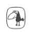
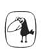

öyküler
Masalda, yaşadığı ada ile anakara arasındaki sakin denizde her gün tek başına balığa çıkan Uraşima adındaki fakir bir balıkçı anlatılır. Uraşima uzun siyah saçları olan genç ve yakışıklı bir adammış. Bir gün denizler kralının kızı yukarı bakıp da geniş gökyüzü dairesinden yüzerek geçen bir karaltıyı seyrederken, kayığının kenarından eğilen Uraşima'yı görmüş.
Dalgaların içinden çıkarak, kendisiyle birlikte denizin altındaki sarayına gelmesi için Uraşima'ya yalvarmış. Uraşima önce, "Çocuklarım evde beni bekler," diyerek kabul etmemiş. Ama denizler kralının kızı nasıl reddedilir? "Sadece bir geceliğine," demiş Uraşima.
Le Guin'in sekiz öyküden oluşan ve Dünyanın Doğum Günü kitabından on yıl kadar önce yazdığı İçdeniz Balıkçısı’nda, "Bilimkurgu Okumamak Üzerine" başlıklı bir giriş yazısı da yer alıyor. Her iki kitabında da ortak olan bazı olay, araç ve kavramları nasıl icat ettiğini anlatıyor yazar. "Çörtme teorisini" ya da "nıh uçuşu"nu merak edenlere tavsiye edilir.
Metis Edebiyat I Öykü | ISBN-13: 978-975-342-579-7
Metis Yayınları www.metiskitap.com
Ursula K. Le Guin
İÇDENİZ BALIKÇISI
Ursula Kroeber Le Guin, 1929'da Kaliforniya'da doğdu. Babası ünlü antropolog Alfred Kroeber, annesi yazar Theodora Kroeber'dir. Radcliff ve Columbia üniversitelerinde edebiyat eğitimi gördü. 1950'li yıllarda fantastik öyküler ve romanlar yazmaya başladı. 1962'de ilk bilimkurgu öyküsü yayımlandı. 1974 tarihli Mülksüzler'e kadar altı bilimkurgu romanı yazdı. Bu tarihten sonra zaman zaman bilimkurgu öyküleri yazmakla birlikte romanlarında daha ziyade yarı gerçekçi/yarı fantastik temalar işledi.
Kısa hikâye, deneme, şiir, çocuk kitapları ve roman türlerinde eserler veren Le Guin'in aldığı çok sayıda edebiyat ödülü arasında Ulusal Kitap Ödülü, beş kez Hugo ve beş kez Nebula Ödülü, Kafka Ödülü ve PEN/Malumud Ödülü bulunuyor. Halen Portland, Oregon'da yaşamaktadır.
Türkçede Mülksüzler ile başladığımız LeGuin edebiyatı, okurdan gördüğü ilgiyle birlikte geniş bir koleksiyon oluşturdu. "Yerdeniz" dizisi, yazarın ilk dört kitaptan on yıl sonra yazdığı Öteki Rüzgâr'la bir beşleme haline geldi. Kısa hikâyelerden oluşan Yerdeniz Öyküleri de beşlemeyle aynı coğrafyada geçmektedir.
LeGuin’in düzyazılarını merak eden okurlarımıza, edebiyat konulu makale ve denemelerini bir araya getirdiğimiz Kadınlar Rüyalar Ejderhalar başlıklı seçkiyi öneriyoruz.

Metis Yayınları İpek Sokak 5, 34433 Beyoğlu, İstanbul
Tel: 212 2454696
Faks: 212 2454519
e-posta: info@metiskitap.com www.metiskitap.com
Metis Edebiyat
İÇDENİZ BALIKÇISI Ursula K. LeGuin
İngilizce Basımı:
A Fisherman of the Inland Sea, Harper Prism, 1995
© Ursula K. LeGuin, 1994
© Metis Yayınları, 2006, 2010
© Türkçe Çeviri: Çiğdem Erkal İpek, 2006
İlk Basım: Mart 2007 İkinci Basım: Kasım 2010
Yayın Yönetmeni:
Müge Gürsoy Sökmen
Kapak İllüstrasyonu: Emine Bora
Dizgi ve Baskı Öncesi Hazırlık:
Metis Yayıncılık Ltd.
Baskı ve Cilt:
Yaylacık Matbaacılık Ltd.
Fatih Sanayi Sitesi No: 12/197-203 Topkapı, İstanbul
Tel: 212 5678003
ISBN-13-978-975-342-579-7
URSULA K. LE GUIN
İÇDENİZ BALIKÇISI
Çeviren:
ÇİĞDEM ERKAL İPEK
metis

LEGUIN KOLEKSİYONU
MÜLKSÜZLER 1991
ROCANNON'UN DÜNYASI 1995
BALIKÇIL GÖZÜ 1995
DÜNYAYA ORMAN DENİR 1996
BAĞIŞLANMANIN DÖRT YOLU 1997
UÇUŞTAN UÇUŞA 2004
DÜNYANIN DOĞUM GÜNÜ 2005
İÇDENİZ BALIKÇISI 2007
LAVINIA 2009
Yerdeniz
YERDENİZ BÜYÜCÜSÜ 1994
ATUAN MEZARLARI 1995
EN UZAK SAHİL 1995
TEHANU 2000
ÖTEKİ RÜZGÂR 2004
YERDENİZ ÖYKÜLERİ 2001
Batı Sahili Yıllıkları
MARİFETLER 2006
SESLER 2008
GÜÇLER 2009
KADINLAR RÜYALAR EJDERHALAR 1999